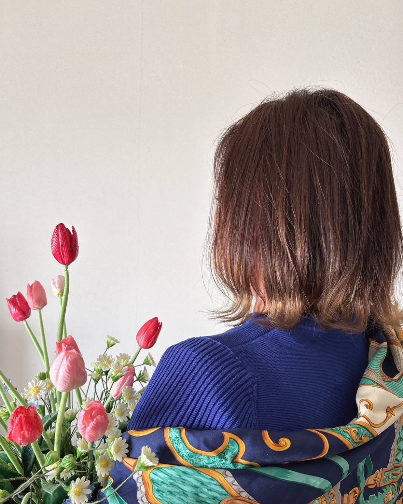

挫折から這い上がり、副業で月10万円を達成した蓉伽の実践ノウハウ。
圧倒的なリピート率を生み出す「心の解剖学」と、
安定した収入を得るためのロードマップを公開する動画講座。
日々の鑑定、本当にお疲れ様です。
占いを仕事にしたい、副業で収入を得たいと頑張る中で、壁にぶつかっていませんか？
「待機してもなかなか依頼が入らない。入っても初回だけでリピートに繋がらない…」
「オーディションに落ち続け、自分には才能がないのではないかと自信を無くしている」
「単価が安いサイトから抜け出せず、労力の割に収入が少なくて疲弊してしまう」
占いの技術（占術）を学ぶだけでは、安定した収入を得ることはできません。
本当に必要なのは、お客様の心を掴む「寄り添い力」と、選ばれ続けるための「実践的なメソッド」です。
3つの柱を掛け合わせ、
圧倒的な「寄り添い力」を生み出す。
人としての正しい道を説く教えをベースに、占い師としての倫理観を養います。相談者を決して傷つけず、誠実に、そしてフラットな心で向き合うための「心の土台」を作ります。
「傾聴」と「共感」の技術を用い、表面的な言葉の奥に隠された本当の痛みや望みを引き出します。相手の心に深く寄り添い、「この人はわかってくれる」という安心感を与えます。
本カレッジで提供される神様学や風水、身体の知識などの多彩なコンテンツで得た学びを鑑定に落とし込みます。多角的な視点から根拠のあるアドバイスを行うことで、言葉の説得力を高めます。
これら3つの要素を融合させることで、特別な才能がなくても、相談者様から深く信頼され選ばれ続ける鑑定を実現できるようになります。
「この先生は私の本当の痛みをわかってくれる！」
「また何かあったら、絶対に〇〇先生に相談したい。」
挫折から月10万円達成までに実践した、リアルなステップと「お客様が集まる占い師」になるための本質的なスキルを公開します。
オーディション連敗からチャット占いでの下積み、そして大手電話占いサイト合格へ。蓉伽が実際に歩んだロードマップと、各フェーズでの壁の乗り越え方を解説します。
恋愛、不倫、人間関係など「よくある相談」の根底に隠れた心理を1年間徹底研究したデータを公開。表面的な悩みではなく「本当の痛み」にアプローチする術を学びます。
チャット占いの過酷な現場で鍛え上げられた、短時間でお客様のSOSを抽出し、的確な言葉を届ける実践的なテクニックをお伝えします。
HSP気質など、他人の感情を強く受け取ってしまう人が、疲弊せずに副業を続けるための自己防衛術とマインドセットを解説します。

大手電話占いサイト所属
百貨店の販売員、レンタカー会社勤務を経て占い師の道へ。信心深い家系に育ち、幼少期より「人の顔を見ると心の状態がわかる」という敏感すぎる感覚（HSP気質）に悩み、他人の感情を受け取りすぎる苦痛を抱えて生きてきた。
占い師を志すも、オーディションの連続不合格など数々の挫折を経験。しかし師匠の「この感覚は人を救うために活かせる」という教えを胸に、占術・心理学・寄り添い方を徹底的に学ぶ。
チャット占いで培ったスピーディーな本質を見抜く力をベースに、約1年をかけて「よくある相談の根底にある理由と背景」を整理・分析。現在の大手電話占いサイトでは、その圧倒的な共感力と深い分析力でコアなリピーター様から厚い支持を得ている。
蓉伽の知識と経験を手に入れたあなたは、鑑定士として次のステージへ進みます。
「待機しても依頼がない」「単価が上がらない」という悩みを抜け出し、安定した依頼の獲得へと繋がります。
お客様の本当の痛みを理解し寄り添うことで、「あなただからお願いしたい」と言われる鑑定士を目指せます。
占いという大好きな仕事で、副業として月に10万円以上の安定した収入を得るという目標に近づくことができます。
サブスクリプションにご登録いただくと、蓉伽の新シリーズに加えて、鑑定士としての実力を飛躍的に高める「すべてのコンテンツ」が見放題・読み放題になります。
【占い師蓉伽 解説】挫折から月10万達成までのリアルな軌跡と、圧倒的リピートを生む「人の心の解剖学」を公開。
【神職蘭世 監修】神社本庁「正階」の資格を持つ本物の神職が、神道や神様、正しい参拝作法を解説。
【理学療法士中村崇秀 解説】医療・介護のリアルな現場視点から、相談者様の深い悩みに具体的で現実的なアドバイスができる知識を。
ご自身で本格的な「風水の鑑定書」を作成し、実際の鑑定メニューとして提供できるレベルまで実践的に学べます。
顔のパーツや表情から性格・運勢を読み解く技術。オンライン鑑定でも強力な武器になります。
鑑定ですぐに使える早見表や、資料集としてのお役立ちPDFを自由にダウンロード・閲覧できます。
本シリーズ「占い副業メソッド」を含む、すべての実践的コンテンツが見放題。
まずは内容を実感していただくため、始めやすいプランをご用意しました。
まずは1ヶ月、動画の内容やご自身の鑑定への
活かしやすさを実感してください。
＼ 初月980円で始めるための必須コード ／
決済画面で以下のクーポンコードを必ずご入力ください
（※いつでも解約可能です）
※お申し込みはMOSHの会員登録が必要です。